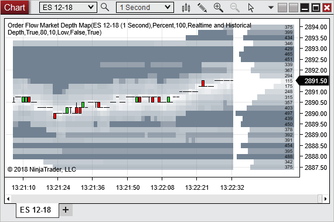

Description
A real-time data indicator that displays the highest market depth volume received at each price level per bar, then maps them to the chart in comparison to other market depth values received within the visible area. This is done by taking the volume range and applying each depth value 1 of 20 opacity values, set by selected bid/ask depth colors. The larger the depth volume, the more opaque the area will be.
 Order Flow Market Depth Map Overview
Order Flow Market Depth Map Overview
Display
After applying the Order Flow Market Depth Map it will begin to plot off of real time level II data (Display mode Historical Depth shown) with 10 levels per side of the market by default.
With the ES chart below there are 20 real-time market depth values, 10 at bid or below and 10 at ask or above. By default, depth values received at higher or lower values will be extended to the current bars.
1) The areas with the most opaque indicate the areas with the largest market depth volume within the visible area.
2) The areas with the transparency indicate the areas with the smallest market depth volume within the visible area.
3) The area between the last price and the price axis is the current depth values building for the current bar.
Shown in the image below, Enabling will display a line on close for the bid and ask prices.
Order Flow Market Depth Map by default also shows Realtime Depth.
Realtime Depth means it displays the realtime Order Flow Market Depth Map values of the currently forming bar. So this will display the largest depth that was received at that price level within the most recent bars time frame. To more closely match the SuperDOM or Level II window you would need to run the Order Flow Market Depth Map on a 1 tick data series.

Using the Order Flow Market Depth Map
The Order Flow Market Depth Map is able to easily display high and low levels of market depth volume, both historical and real time.
Being able to see high market depth volume can help show potential areas of support and resistance. In the image below we can see there is some large volume at 2790.00 which has created an area of support.
Additionally the Order Flow Market Depth Map makes it easy to see when large volume has been added and removed as seen in the image below.
Notes: Level II data is required for this indicator to function.
|
Critical: Equity instruments are not supported. There is a limitation in which only one ECN or market marker will have depth provided per level.
|
|
Order Flow Market Depth Map Parameters
Base volume range on
|
Percent
|
Distributes the opacity levels of the map based on the depths percentage in comparison to the exact volume entered for the Maximum volume range and Minimum volume range
|
Exact volume
|
Distributes the opacity levels of the map based on the depths volume in comparison to the exact volume entered for the Maximum volume range and Minimum volume range
|
|
Maximum volume range
|
Input that indicates what values would have the most opacity
|
Minimum volume range
|
Input that indicates what value would have the least opacity
|
# of market depth levels
|
Input that indicates how many levels of depth on the bid and ask side to show. How many levels can be displayed will be limited by how many levels the data provider supplies.
|
Opacity distribution
|
Low
|
More values have less opacity
|
Normal
|
Opacity levels are evenly split between the highest and lowest depth volume received.
|
High
|
More values have more opacity
|
|
Display mode
|
Sets which parts of the depth map are displayed, possible values are:
•Realtime and Historical Depth (default) •Realtime Depth •Historical Depth |
Real time depth width
|
The margin of pixels (between the last price and time axis) to display the currently building realtime depth map
|
Extend last known volume
|
If enabled, areas where no market depth was reported, but a market depth was reported to the previous bar’s price level, the value will be carried over to the next bar. It will continue carrying over until a new market depth is received at that price.
|
Color for bid depth
|
Color for depth on the bid side of the market
|
Color for ask depth
|
Color for depth on the ask side of the market
|
Show bid/ask line on close
|
If enabled show the line on close for the bid and ask prices
|
|